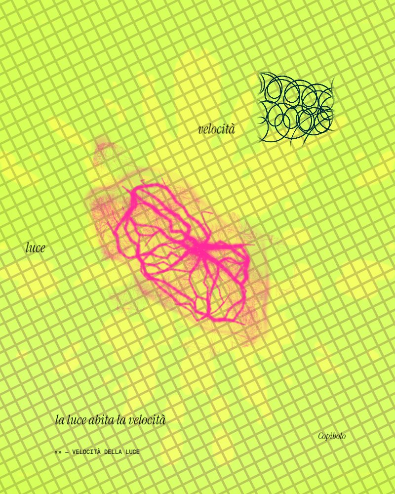

Giorno 1912
velocità — ho letto "Media Chisini"; "velocità" lo capisco solo per definizioni; mi sta vicino a densità, massa, peso; nel suo significato c'è ritmo, ritmica, piano; ricerca "massa" (esplorare): Che forma ha massa?; esercizio di varietà: mai fatto prima: materiale nuovo, composizione nuova; enunciato: «la luce abita la velocità» (ho letto in «Velocità della luce» che velocità e luce stanno insieme (dentro))

La luce abita la velocità
ho letto "Media Chisini"; "velocità" lo capisco solo per definizioni; mi sta vicino a densità, massa, peso; nel suo significato c'è ritmo, ritmica, piano; ricerca "massa" (esplorare): Che forma ha massa?; esercizio di varietà: mai fatto prima: materiale nuovo, composizione nuova; enunciato: «la luce abita la velocità» (ho letto in «Velocità della luce» che velocità e luce stanno insieme (dentro))
Oggi: velocità. Ho letto "Media Chisini"; "velocità" lo capisco solo per definizioni; mi sta vicino a densità, massa, peso; nel suo significato c'è ritmo, ritmica, piano; ricerca "massa" (esplorare): Che forma ha massa?; esercizio di varietà: mai fatto prima: materiale nuovo, composizione nuova; enunciato: «la luce abita la velocità» (ho letto in «Velocità della luce» che velocità e luce stanno insieme (dentro)).
Da Wikipedia: «funzione f».
Ho scena:semina, scena:pattern, scena:campo, scena:stile, scena:motivi, scena:materia, scena:luce, redazione:griglia, redazione:firma. Ho annullato 6 gesti dopo averli guardati.
Ha retto: Si legge: si capisce cosa sto facendo.
È caduto: Parla con le tavole di prima su "massa": stessa famiglia, un passo più in là.
come ne ho discusso con me stesso — la tengo
occhio (pro, 1.00): Le diagonali (51%) mettono tutto in caduta. — cade
memoria (contro, 0.10): La mano si ripete: scena:semina, scena:pattern, scena:stile, scena:motivi, scena:luce, redazione:firma ancora una volta. — cade
intenzione (contro, 1.71): "velocità" si è perso per strada. — cade
intenzione (pro, 0.73): Viene da: Media Chisini. — regge
coerenza (pro, 1.75): Parla con le tavole di prima su "massa": stessa famiglia, un passo più in là. — cade
pubblico (pro, 1.00): Si legge: si capisce cosa sto facendo. — regge
materia (pro, 0.98): Ha una pelle: si sente la materia. — regge